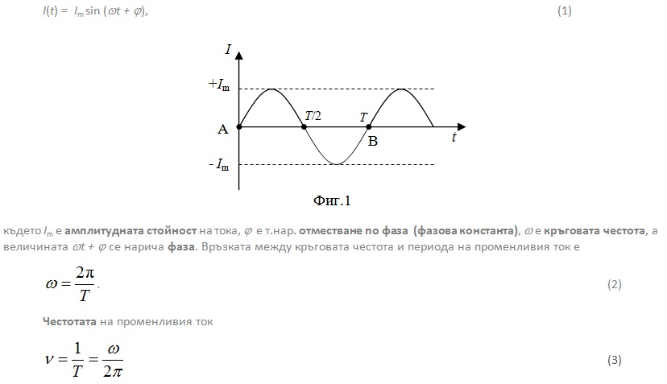
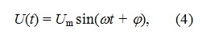
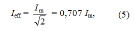
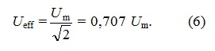
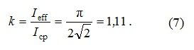
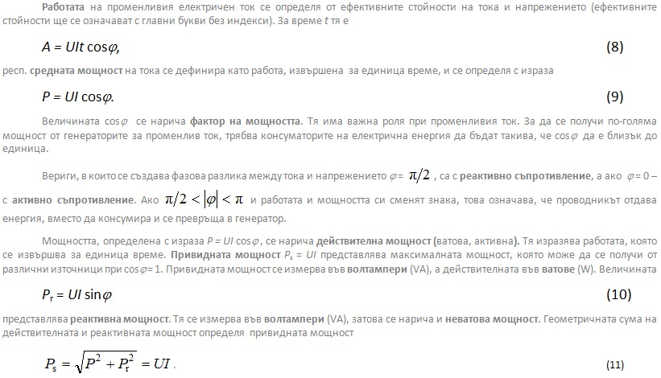

-
Електричен ток, който променя своята големина или големина и посока във времето, се нарича променлив ток. Когато тези изменения се повтарят през равни интервали от време, променливият ток се нарича периодичен. Ако периодичните изменения се извършват съгласно синусов закон – токът се нарича синусоидален или просто периодичен. В определени случаи изменението на тока се извършва по други закони и тогава са налице т.нар. несинусоидални токове – триъгълен, правоъгълен, трапецовиден и др. – или сложно периодични токове. При синусоидален променлив ток е неизменен характерът на кривите на зависимостта от времето на напрежението и големината на тока във всеки участък от линейните електрични вериги, т.е. във вериги, съдържащи резистори, индуктивности и кондензатори.
-
1. Големина и напрежение на променливия ток
Графиката на зависимостта на променливия ток от времето е представена на фиг.1. Най-малкият интервал от време, през който променливият ток (респ. напрежението) извършва един пълен цикъл от изменения, се нарича период на променливия ток и се означава с Т. Разстоянието по правата АВ, от А до В отговаря на времето, за което токът и напрежението заемат стойности – от нула до най-голямата положителна стойност и от нула до най-голямата отрицателна стойност, като в точка В приемат отново стойност нула.
Моментната стойност на големината на променливия електричен ток е
се дефинира с броя на пълните изменения на променливия ток (броя на периодите) за една секунда. Тя се измерва в херци (Hz). Един херц е честота на тoка с период, равен на една секунда. Честота на променливия ток = 50 Hz означава, че тя е равна на 50 периода в секунда.
Моментната стойност на напрежението е
където Um е амплитудната стойност. В общия случай фазовата константа не съвпада с тази на електричния ток.
В България и Европа честотата на променливия ток е 50 Hz, а в САЩ стандартната честота на тока за битови нужди е 60 Hz. В някои слаботокови устройства, високочестотни електрически пещи и др. се използват токове с честоти от 10^3 до 10^6 Hz. В телефонната техника, звуковото кино и радиото се използват променливи токове с честота от 50 Hz до няколко милиона херца (честотата на радиопредаванията е от порядъка на мегахерци), а някои микровълнови устройства работят с честота, достигаща до 10^10 Hz. -
2. Eфективни стойности на тока и напрежението
Средната алгебрична стойност на големината на синусоидалния променлив ток за един или няколко периода е равна на нула. Поради този факт, един галванометър или обикновен амперметър за прав ток не се отклоняват при протичане на променлив ток през тях. И тъй като при променлив ток, неговата големина и напрежение се изменят непрекъснато с времето, за пресмятане на извършената работа, на средната мощност и др., се въвеждат т. нар. ефективни стойности на тока и напрежението.
Ефективната големина на променливия ток се дефинира като големина на постоянен ток, който създава такова количество топлина, колкото създава и променливият ток за едно и също време.
т.е. ефективната големина на тока се получава като максималната (амплитудната) стойност на тока Im се раздели на √2.
Нека върху два еднакви по мощност, размери и устройство електрични нагреватели са поставени еднакви по обем, форма и материал съдове, напълнени с вода, еднаква по количество и начална температура. Единият от нагревателите се захранва с променлив ток, а другият – с постоянен ток. Ако за едно и също време водата в съдовете достигне една и съща температура, се казва, че ефективната стойност на променливия ток е равна на големината на постоянния ток. Например, ако постоянният ток е 7 А, ефективната стойност на променливия ток също е равна на 7 А.
Аналогично на ефективната стойност на големината на променливия ток се дефинира и ефективната стойност на напрежението
Когато се говори за големина на променлив ток и променливо напрежение, обикновено се разбират именно ефективните стойности и показанията на измервателните прибори се отнасят за тях. Под средна стойност на синусоидално изменящия се ток се разбира големината на постоянен ток, при който за време равно на половин период през напречното сечение на проводника преминава същото количество електричество, както и при променливия ток. Отношението на ефективната и средната стойност на тока се нарича коефициент или фактор на формата (k). При синусоидален ток тази величина има стойност

-
3. Работа и мощност на променлив електричен ток

Реактивната мощност се използва за компенсиране на фазовото отместване на тока с цел да се подобри използваемостта на електричните съоръжения. Намалението на фазовото отместване е равностойно на намаление на реактивната мощност. Тъй като тя е положителна, когато φ > 0 (капацитивно съпротивление) и отрицателна, когато φ < 0 (индуктивно съпротивление), реактивната мощност, консумирана от даден уред, може да бъде отчасти или изцяло компенсирана с реактивната мощност, консумирана от друг уред, ако двете мощности имат противоположни знаци. Например употребяваната реактивна мощност от един електромотор, която е отрицателна, може да се компенсира с реактивната мощност на кондензатор, която е положителна.
Синусоидалният променлив ток икономично и лесно се пренася, разпределя и преобразува в други видове енергия, затова около 90% от използваната енергия е променливотокова електроенергия. Основното му преимущество пред постоянния ток е, че електроенергията се пренася след като напрежението, получено в генераторите, се повиши, така че при дадена мощност да има много по-слаб ток. Тъй като сечението на необходимите проводници се определя от големината на тока, това води до големи икономии на материали за направата на далекопроводи. В съвременните главни (магистрални) далекопроводи, по които се пренася електроенергия на големи разстояния, напрежението обикновено е 220÷400 kV. Ако пренасянето на електроенергия се осъществи при обикновеното ниско напрежение 220 V, токът ще бъде 1000 пъти по-силен и ще бъде необходимо голямо сечение на проводниците (за да се понижи съответно електросъпротивлението и да се намалят загубите). Това прави системата много по-тежка и изисква много по-голям брой и по-здрави стълбове за далекопровода, при което неговата направа струва толкова скъпо, че ще бъде практически неосъществим. Друго важно преимущество на променливия ток е, че максималната мощност на генераторите за променлив ток значително надвишават тези за постоянен ток.
Не по-малко важно преимущество на променливия ток е, че асинхронните мотори имат много по-просто устройство, струват много по-евтино и изискват по-малко грижи за поддържане, отколкото моторите за постоянен ток. По тази причина асинхронните мотори са най-разпространените електрични двигатели. При необходимост от постоянен ток (електролиза, зареждане на акумулатори, радиотехника, трамваи и др.), променливият ток се преобразува в постоянен посредством токоизправители. -
© ROGACHEV